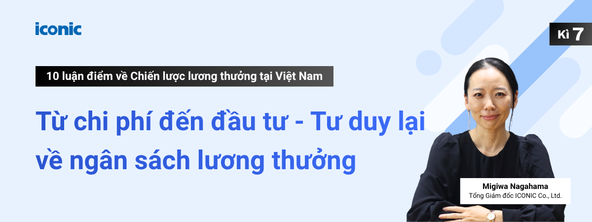

Bản tin
Kỳ 7 | Từ chi phí đến đầu tư - Tư duy lại về ngân sách lương thưởng

Ở Kỳ 6 — Thiết kế lương thưởng cho lãnh đạo địa phương: Khoảng trống thường bị bỏ ngỏ trong chiến lược đãi ngộ, MIRAI VIETNAM HR CONSULTANT đã phân tích lý lý do nhóm nhân sự chiến lược này cần một khung cơ chế đãi ngộ biệt lập và có chủ đích, thay vì một phiên bản "phóng to" cơ học từ hệ thống của nhân viên thông thường.
Kỳ 7, chúng ta sẽ cùng tiếp cận một bài toán mang tính vĩ mô và cân não hơn đối với các nhà quản trị: Dịch chuyển tư duy định biên ngân sách từ "Tối ưu chi phí" sang "Phân bổ vốn chiến lược". Liệu góc nhìn "tăng lương = tăng chi phí" đã thực sự toàn diện, và làm thế nào để đặt quyết định đầu tư vào Quản trị đãi ngộ lên bàn cân tài chính một cách thực chất?
Bản chất của bẫy tư duy: "Tăng lương = Chi phí"
Khi một đề xuất điều chỉnh ngân sách lương thưởng được trình lên Ban Giám đốc hoặc Trụ sở chính, phản ứng thận trọng từ các nhà quản trị tài chính là điều hoàn toàn hợp lý. Chi phí nhân sự tăng thêm sẽ lập tức ghi nhận vào báo cáo kết quả hoạt động kinh doanh (P&L) - một con số hiển thị trực quan, "gõ cửa" dòng tiền ngay trong kỳ kế toán.
Tuy nhiên, có một chỉ số tài chính ẩn dòng thường bị bỏ sót trên bảng cân đối: Chi phí cơ hội và tổn thất khi mất nhân sự.
Khác với chi phí vận hành định kỳ, chi phí nghỉ việc không có một dòng danh mục riêng trên sổ sách kế toán; nó phân rã và "ẩn mình" dưới dạng giảm năng suất, gián đoạn vận hành và chi phí cơ hội bị mất. Chính sự bất đối xứng về mặt hiển thị này đã khiến các cuộc thảo luận C&B thường bị đóng khung trong câu hỏi: "Chúng ta tốn thêm bao nhiêu?" thay vì câu hỏi mang tính chiến lược hơn: "Nếu không hành động, doanh nghiệp sẽ mất bao nhiêu?"
Xu hướng "Vốn nhân lực” (Human Capital) định hình quản trị toàn cầu
Trong kỷ nguyên kinh doanh hiện đại, khái niệm Quản trị vốn nhân lực (Human Capital Management) đã dịch chuyển từ một khẩu hiệu nhân văn thành một thông lệ quản trị tài chính cốt lõi. Nhân sự không còn là chi phí cần tối giảm, mà là một loại tài sản vô hình cần tối ưu hóa hiệu suất sinh lời (ROI).
Minh chứng rõ nét nhất là sự phổ biến của ISO 30414 - tiêu chuẩn quốc tế đầu tiên về đo lường và báo cáo vốn nhân lực. Tiêu chuẩn này thiết lập một hệ thống chỉ số định lượng khắt khe để tổ chức theo dõi và công bố thông tin: từ chi phí tuyển dụng, tỷ lệ luân chuyển, năng suất lao động cho đến các chỉ số về đa dạng và hòa nhập (D&I).
Trong bối cảnh dòng vốn đầu tư toàn cầu ngày càng khắt khe với các tiêu chuẩn ESG (Môi trường, Xã hội, Quản trị) và yêu cầu minh bạch hóa thông tin phi tài chính tại các sàn chứng khoán lớn (Mỹ, Âu, Nhật Bản), ISO 30414 chính là chiếc chìa khóa giúp các nhà lãnh đạo dịch chuyển ngôn ngữ nhân sự thành ngôn ngữ của các nhà đầu tư tài chính.
Định lượng "Chi phí ẩn": Tổn thất thực tế khi một nhân sự rời bỏ tổ chức
Nằm trong khung tham chiếu của ISO 30414, chỉ số Workforce Turnover Cost (Chi phí phát sinh do nhân sự nghỉ việc) là công cụ đắc lực giúp đo lường các khoản chi phí phát sinh cũng như chi phí cơ hội bị tổn thất khi có nhân viên nghỉ việc. Công thức tính được thiết lập như sau:
Chi phí phát sinh do nhân sự nghỉ việc (Workforce
Turnover Cost) ＝
Chi phí tuyển dụng bình quân/người × Số người nghỉ
việc tự nguyện
＋ Chi phí đào tạo bình quân/người × Số
người nghỉ việc tự nguyện
＋ Chi phí làm thêm giờ, chi
phí thủ tục và các chi phí khác để bù đắp công việc của
người nghỉ việc
＋ Doanh thu bình quân/ngày/người × Số
người nghỉ việc tự nguyện × Số ngày tuyển dụng thay thế bình
quân
－ Chi phí lương & phúc lợi bình
quân/ngày/người × Số người nghỉ việc tự nguyện × Số ngày
tuyển dụng thay thế bình quân
Điểm đáng chú ý của công thức này là ngoài các chi phí trực tiếp như tuyển dụng và đào tạo, nó còn tính đến cả cơ hội kinh doanh bị mất trong thời gian vị trí còn trống. Phần tiết kiệm từ việc không phải trả lương và phúc lợi trong giai đoạn đó được khấu trừ vào tổng chi phí.
Để minh họa cụ thể, hãy áp dụng công thức này cho một vị trí nhân viên tại Việt Nam với mức lương 20 triệu VNĐ/tháng:
【Các thông số tính toán】
- Lương tháng: 20 triệu VNĐ
- Số ngày làm việc trong tháng: 22 ngày
- Lương giờ: 20 triệu ÷ (22 ngày × 8 giờ) ≈ 113.600 VNĐ/giờ
- Thời gian thiếu người: 1 tháng
- Đơn giá làm thêm giờ ngày thường: 113.600 × 150% ≈ 170.400 VNĐ/giờ (Giả định làm thêm 2 giờ/ngày x 20 ngày trong 1 tháng)
- Doanh thu bình quân ngày: 600 triệu/năm ÷ (22 ngày × 12 tháng) ≈ 2,27 triệu VNĐ/ngày
- Chi phí lương và BHXH bình quân ngày: 20 triệu ÷ 22 ngày ≈ 0,91 triệu VNĐ + BHXH phần doanh nghiệp (~21,5%) 0,19 triệu VNĐ = ~1,10 triệu VNĐ/ngày
- Chi phí OJT (đào tạo tại nơi làm việc): Giả sử nhân sự phụ trách OJT (lương 25 triệu VNĐ/tháng) dành 25% thời gian làm việc để hướng dẫn trong 2 tháng thử việc → 25 triệu × 25% × 2 tháng ≈ 12,5 triệu VNĐ
| Chi phí | Ước tính |
| ① Chi phí tuyển dụng (20–25% lương năm) | 52 - 65 triệu VNĐ |
| ② Chi phí OJT trong thời gian thử việc (2 tháng) | ~ 12 - 13 triệu VNĐ |
|
③ Chi phí làm thêm giờ bù đắp công việc (2 giờ/ngày × 20 ngày) |
~ 7 triệu VNĐ |
|
④ Cơ hội kinh doanh bị mất trong 1 tháng thiếu
người (2,27 triệu × 22 ngày) |
~ 50 triệu VNĐ |
|
⑤ Trừ: Tiết kiệm lương và BHXH trong thời gian vị trí
trống (1,10 triệu × 22 ngày) |
~ 24 triệu VNĐ |
| Tổng | ~ 97 – 111 triệu VNĐ |
※ Tương đương khoảng 5–5,5 tháng lương của vị trí đó. Đây là ước tính minh họa - các thông số như doanh thu bình quân ngày, số giờ làm thêm thực tế và mức lương người phụ trách OJT cần được điều chỉnh theo thực tế của từng doanh nghiệp.
Đặt hai con số lên bàn cân tài chính
Hãy làm một phép so sánh đối ngẫu mang tính quản trị:
- Phương án A (Điều chỉnh chủ động): Doanh nghiệp tăng lương cho vị trí này thêm 3 triệu VNĐ/tháng để tiệm cận thị trường. Ngân sách tăng thêm mỗi năm (gồm tháng lương 13) là 39 triệu VNĐ.
- Phương án B (Thụ động giữ nguyên): Nhân sự rời đi vì thu nhập thiếu cạnh tranh. Tổn thất tài chính phát sinh để thay thế: 97 - 111 triệu VNĐ
Khoảng cách tài chính này buộc các nhà điều hành phải cân nhắc bài toán lương thưởng dưới góc nhìn quản trị rủi ro dòng tiền.
Dù tăng lương không phải là giải pháp giữ chân nhân sự duy nhất, việc trì hoãn điều chỉnh khi dải lương thấp hơn mặt bằng chung sẽ đẩy doanh nghiệp vào rủi ro lớn hơn. Hơn nữa, tại Việt Nam, một khi lương đã điều chỉnh tăng thì rất khó hạ xuống nếu không có sự đồng thuận của người lao động - đồng nghĩa với việc cải thiện dải lương sẽ làm tăng chi phí vận hành cố định dài hạn. Ngược lại, chi phí nghỉ việc dù mang tính chất tổn thất một lần (one-off cost), nhưng nếu doanh nghiệp rơi vào vòng lặp "tuyển mới - rời đi" trong 2–3 năm, tổng chi phí tích lũy sẽ nhanh chóng vượt xa ngân sách điều chỉnh lương ban đầu.
Do đó, đặt hai loại chi phí này lên bàn cân để tính toán hiệu suất sinh lời (ROI) là một tham chiếu chiến lược đắt giá, giúp Ban điều hành đưa ra quyết định định biên dòng vốn chính xác.
Cần lưu ý, không phải mọi trường hợp nghỉ việc đều là tổn thất cần ngăn chặn. Biến động nhân sự lành mạnh - như thay thế bằng nhân sự có năng lực vượt trội hoặc tư duy đổi mới - chính là động lực nâng cao năng lực cạnh tranh cho tổ chức. Khung tính toán chi phí ở trên chỉ áp dụng cho các trường hợp biến động nhân sự ngoài mong muốn, khi những nhân tài nòng cốt được kỳ vọng gắn bó lâu dài lại rời bỏ tổ chức.
Bốn trụ cột chiến lược khi đầu tư vào Quản trị đãi ngộ
Khi tiếp cận hệ thống Total Rewards như một danh mục đầu tư, Ban điều hành cần kỳ vọng tỷ lệ sinh lời (ROI) đến từ 4 trụ cột chiến lược:
① Tối ưu hóa tỷ lệ giữ chân: Tăng năng lực cạnh tranh của chính sách đãi ngộ giúp hạ thấp tỷ lệ turnover. Việc phòng ngừa các tổn thất ẩn từ làn sóng nghỉ việc chính là phần lợi nhuận trực tiếp và dễ định lượng nhất.
② Tối ưu hóa phễu tuyển dụng: Cơ chế đãi ngộ cạnh tranh là thỏi nam châm thu hút các "ngôi sao" trên thị trường, rút ngắn thời gian lấp đầy vị trí trống (Time-to-hire), giảm chi phí sourcing và hạn chế tỷ lệ "gãy" thử việc.
③ Bảo toàn và khai thác vốn đào tạo: Chi phí phân bổ cho OJT và phát triển năng lực chỉ có thể hoàn vốn khi nhân sự gắn bó đủ lâu để tạo ra kết quả kinh doanh. Nếu nhân sự rời đi khi chưa đạt "độ chín", khoản đầu tư này sẽ bốc hơi hoàn toàn và bắt đầu lại chu kỳ chi phí cho người kế nhiệm. Do đó, giữ chân nhân tài chính là đòn bẩy trực tiếp bảo vệ vốn đào tạo.
④ Ngăn chặn tình trạng "Nghỉ việc trong im lặng" (Quiet Quitting): Khi nhân sự nhận mức đãi ngộ dưới giá trị thị trường, họ có thể không nghỉ việc ngay nhưng sẽ chọn giải pháp giảm mức độ cam kết. Hệ quả là năng suất lao động sụt giảm kéo dài - một loại chi phí cơ hội cực kỳ nguy hiểm vì khó định lượng trực tiếp.
Khung cấu trúc đề xuất thuyết phục Ban giám đốc và Trụ sở chính
Để một đề xuất điều chỉnh lương thưởng được Trụ sở chính hoặc Ban giám đốc phê duyệt, phòng Nhân sự chiến lược không thể dùng các lập luận mang tính cảm tính như "nhân viên đang kêu ca" hay "áp lực lạm phát". Đề xuất cần được đóng gói như một Business Case tài chính thực thụ với cấu trúc 3 lớp dữ liệu logic:
Một cấu trúc đề xuất thực tiễn có thể gồm ba lớp:
- Lớp 1 - Định vị thị trường khách quan: "Mức lương hiện tại của chúng ta đang ở khoảng P25 so với thị trường" - dựa trên dữ liệu khảo sát lương thực tế, không phải cảm tính.
- Lớp 2 - Chi phí của việc điều chỉnh: "Nâng lên mức P50 (Mức trung vị) sẽ tốn thêm X triệu đồng mỗi năm cho nhóm vị trí này" - con số cụ thể, có thể lập kế hoạch ngân sách.
- Lớp 3 - Chi phí của việc không điều chỉnh: "Nếu mất một người ở vị trí này, chi phí ước tính là Y triệu đồng" - đặt hai con số cạnh nhau để người ra quyết định tự đánh giá.
Việc áp dụng khung tư duy từ ISO 30414 sẽ giúp HR nói cùng một ngôn ngữ kinh doanh với CEO và CFO, đưa các cuộc thảo luận nhân sự thoát khỏi chiếc bẫy "xin - cho" ngân sách để bước vào không gian của thảo luận chiến lược.
Tham gia Khảo sát Lương Việt Nam 2026 để có dữ liệu thực cho các quyết định của bạn
Mọi chiến lược đầu tư thông minh đều cần bắt đầu bằng một báo cáo thẩm định dữ liệu khách quan. Không có dữ liệu thị trường chuẩn xác, mọi cuộc thảo luận về việc "tăng, giảm hay giữ nguyên" lương thưởng đều rơi vào trạng thái võ đoán.
Khảo sát Lương Việt Nam 2026 do MIRAI VIETNAM HR CONSULTANT thực hiện là nguồn cơ sở dữ liệu chi trả thực tế được phân tách theo ngành nghề, quy mô và địa bàn kinh doanh. Đây chính là điểm tựa vững chắc để quý doanh nghiệp định vị chính xác vị thế của mình trên bản đồ tài năng, từ đó xây dựng các quyết định điều chỉnh lương thưởng có cơ sở khoa học và thuyết phục tuyệt đối trước Ban lãnh đạo.
- Bề dày uy tín: Năm thứ 17 MIRAI VIETNAM HR CONSULTANT thực hiện khảo sát định kỳ tại thị trường Việt Nam.
- Quy mô dữ liệu: Ghi nhận sự tham gia của 392 doanh nghiệp trong kỳ khảo sát năm 2025
- Đặc quyền: Doanh nghiệp tham gia cung cấp số liệu sẽ được nhận báo cáo kết quả tổng hợp hoàn toàn miễn phí cùng nhiều đặc quyền phân tích chuyên sâu khác.
Kỳ tiếp theo | Kỳ 8: Làn sóng Pay Transparency: Định hình lại bài toán minh bạch tiền lương tại Việt Nam
Tại Việt Nam, dù muốn hay không, phần lớn các nhà quản lý đều phải thừa nhận một thực tế: nhân viên vẫn đang âm thầm "rỉ tai" nhau về thu nhập. Ngay cả khi doanh nghiệp áp dụng chính sách bảo mật nghiêm ngặt, thì trên thực tế, "vòng tròn thông tin" của nhân viên đã tự tạo ra một sự minh bạch nhất định.
Vậy câu hỏi đặt ra là: Doanh nghiệp nên chủ động công khai thông tin lương thưởng đến mức độ nào, và đâu là ranh giới cần giữ kín? Song song với việc cập nhật làn sóng Pay Transparency đang bùng nổ tại các nước Âu Mỹ, bài viết này sẽ cùng bạn tìm kiếm một giải pháp truyền thông tiền lương dung hòa và thực tế nhất cho bối cảnh doanh nghiệp tại Việt Nam.
Hẹn gặp lại Quý doanh nghiệp trong kỳ tiếp theo!